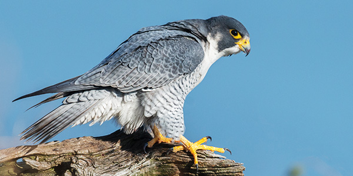

Voice
Habitat
Peregrine falcons are among the world's most common birds of prey and live on all continents except
Antarctica.
They prefer wide-open spaces, and thrive near coasts where shorebirds are common, but they can
be found everywhere from tundra to deserts.
Behaviour
Peregrine falcons are solitary, territorial, top predators. Those that migrate live alone more than 8
months of the year, spending only 16-18 weeks with a mate raising a family. Non-migratory peregrines,
such as those in Pittsburgh, stay on territory alone or as a mated pair.
Diet
Their typical prey items include shorebirds, ducks, grebes, gulls, pigeons, and songbirds. Peregrine
falcons also eat bats, and they occasionally steal prey—including fish and rodents—from other raptors.
Fun Fact
The Peregreen Falcon is the most fast bird in the world. With her wings tucked in she dives into the
speed of 390 (maximum) km per hour
Info collected by: Arjun Kalpana Harshal Baviskar
THANK YOU